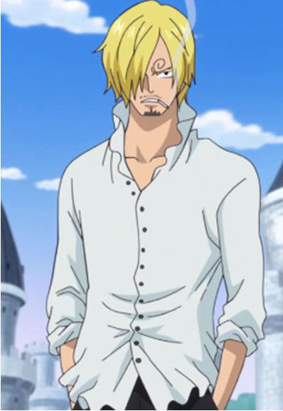
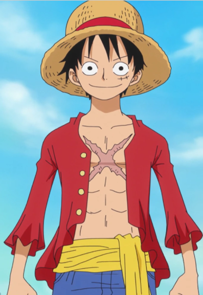
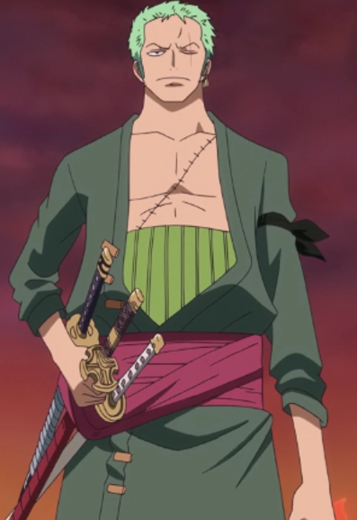

Vinsmoke Sanji
Es el cocinero de los Piratas de Sombrero de Paja. Es el quinto miembro de la tripulación, y el cuarto en unirse.
Él nació en el North Blue, siendo el primer tripulante en no ser originario del East Blue.
Nacido como el cuarto hijo de la familia Vinsmoke, y por ende como uno de los príncipes del Reino de Germa, Sanji se exilió de su país y renegó de su familia,
yéndose al East Blue y pasando a trabajar como cocinero en el Baratie, hasta que decidió unirse a la banda. Es considerado parte del Trío Monstruoso junto a Luffy y Zoro; y, como tal,
es uno de los combatientes más fuertes de la tripulación. Su sueño es encontrar el mar legendario conocido como All Blue.
Después de los acontecimientos del arco de Whole Cake Island obtuvo una recompensa de 330.000.000 siendo así la tercera mas alta de la tripulación,
superada solo por la de Jinbe y Luffy. A pesar de haber renunciado al apellido de su familia, el Gobierno Mundial le sigue reconociendo como parte de esta,
estando su nombre de nacimiento en su cartel de recompensa. Actualmente posee una recompensa de 1.032.000.000 que obtuvo después de los acontecimientos del arco del País de Wano,
siendo la cuarta recompensa más alta de la tripulación superada por la de Luffy, Zoro y Jinbe.

Monkey D. Luffy
Monkey D. Luffy, más conocido como Luffy Sombrero de Paja, es el protagonista principal de la serie de manga y anime One Piece. Es el capitán y fundador de los Piratas
de Sombrero de Paja así como un de los Cuatro Emperadores que gobiernan los mares del Nuevo Mundo. Comió una fruta del diablo llamada fruta Gomu Gomu, que le convirtió
en un hombre de goma. Además de esto, posee varias habilidades que le hacen ser un pirata más que especial; un gran ejemplo de ello es la capacidad de usar el haoshoku
haki ―que sólo lo posee una persona dentro de un millón― y poseer también los otros dos tipos de haki.
Como fundador y capitán de los Piratas de Sombrero de Paja, es el primer miembro que compone la tripulación, así como uno de sus tres principales combatientes. Luffy fue uno
de los once piratas novatos conocidos como los "los Once Supernovas" junto al espadachín de su tripulación Roronoa Zoro y, con ello, uno de los once piratas con una recompensa
superior a Belly100.000.000. Posteriormente su recompensa subió a 1.500.000.000 tras los hechos acaecidos en Whole Cake Island y actualmente cuenta con una recompensa de
3.000.000.000 como consecuencia de todos los acontecimientos acaecidos en el asalto a Onigashima.

Roronoa Zoro
Roronoa Zoro, conocido como El Cazador de Piratas es el combatiente de los Piratas de Sombrero de Paja, y uno de sus dos espadachines, así como un antiguo cazarrecompensas.
Fue el primer miembro en unirse a la tripulación, y es considerado parte del Trío Monstruoso junto a Luffy y Sanji. Su sueño es convertirse en el mejor espadachín del mundo.
Zoro también es considerado uno de los Once Supernovas que forman parte de «la peor generación», ya que llegó al Archipiélago Sabaody con 120.000.000 de recompensa.
Después de los acontecimientos del arco de Dressrosa obtuvo una recompensa de Belly320.000.000, siendo la cuarta más alta de la tripulación, después de las de Luffy, Jinbe y Sanji.